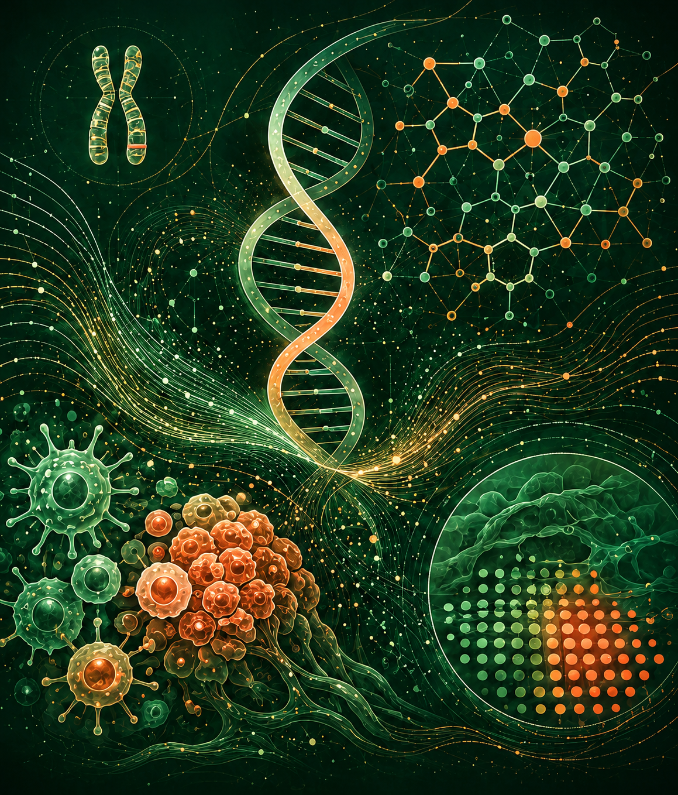
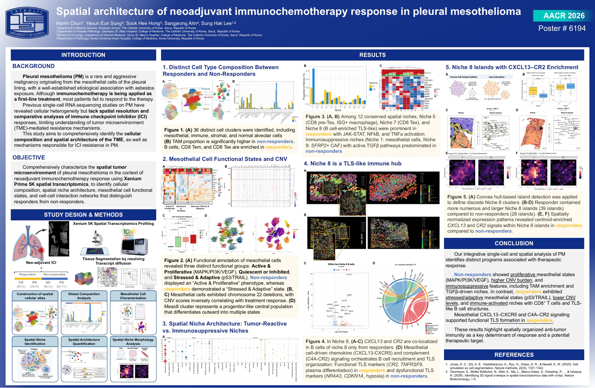
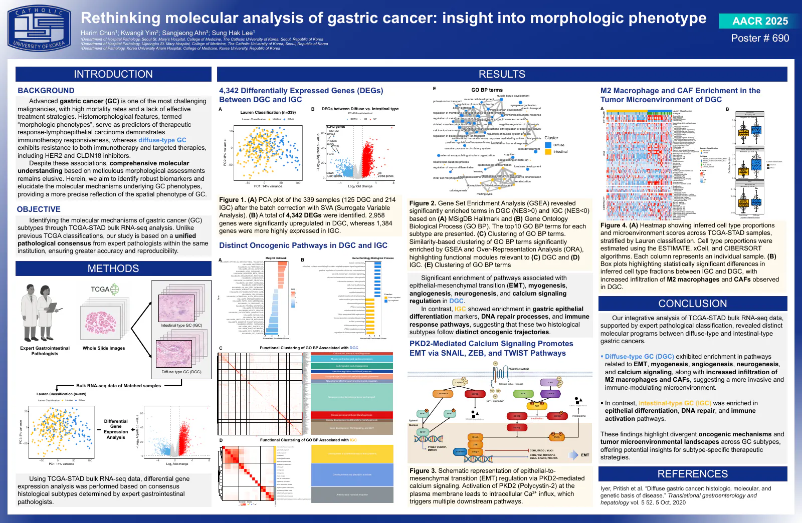
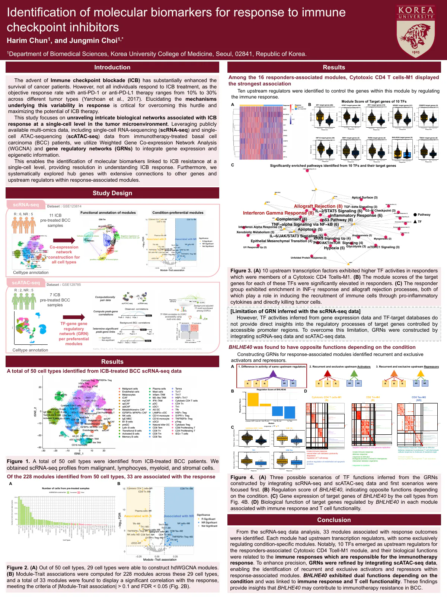
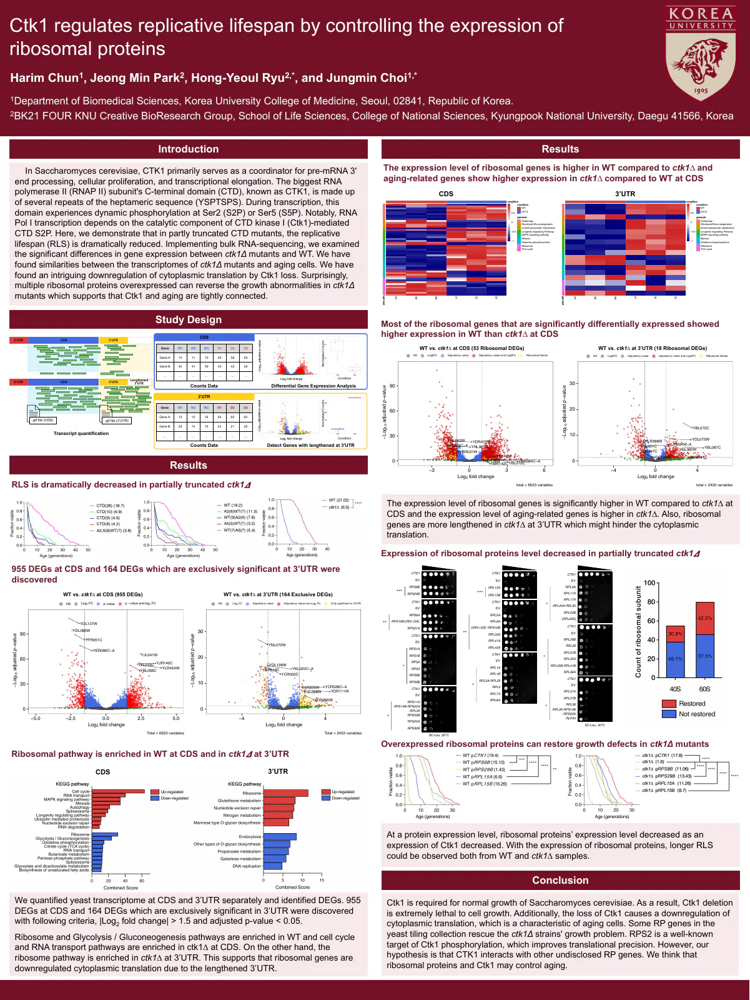

Spatial Transcriptomics
Mapping tumor–immune spatial architecture and treatment response in pleural mesothelioma.
- Pleural mesothelioma Spatial analysis of tumor–immune interactions after neoadjuvant immunochemotherapy · AACR 2026
Decoding Cancer Complexity at Spatial & Single-Cell Resolution.
Hello, I’m Harim Chun, a Ph.D. student in Biomedical Sciences at The Catholic University of Korea and a member of PathFinderLab. I use spatial transcriptomics, scRNA-seq, and multi-omics to study tumor–immune interactions and biomarkers of therapeutic response.

Mapping tumor–immune spatial architecture and treatment response in pleural mesothelioma.
Integrating scRNA-seq and scATAC-seq to study cellular heterogeneity and gene regulation.
Identifying molecular biomarkers of cancer progression and clinical outcomes.
The Catholic University of Korea & Korea University Anam Hospital · Advisor: Sung Hak Lee, M.D., Ph.D.
Graduate Student (2025—) · Research Associate (2024—2025)
Korea University · Advisor: Jungmin Choi, Ph.D.
Graduate Student (2021—2024) · Undergraduate Research Intern (2020—2021)
Soongsil University · Advisor: Sangsoo Kim, Ph.D.
Research Intern
Yongin, Korea
Bioinformatics Intern

Poster presentation · San Diego, USA · Apr 2026
View poster PDF
Poster presentation · Chicago, USA · Apr 2025
View poster PDF
Poster presentation · Hongcheon, Korea · Feb 2024 · Excellence Poster Award
View poster PDF
Poster presentation · KOGO Winter Symposium · 2023
View poster PDFThe Catholic University of Korea College of Medicine, Seoul
Korea University College of Medicine, Seoul · Thesis: molecular biomarkers of response to immune checkpoint inhibitors
Soongsil University, Seoul · Bioengineering & Bioinformatics, Interdisciplinary Major in Big Data Computing
University of Mississippi, USA